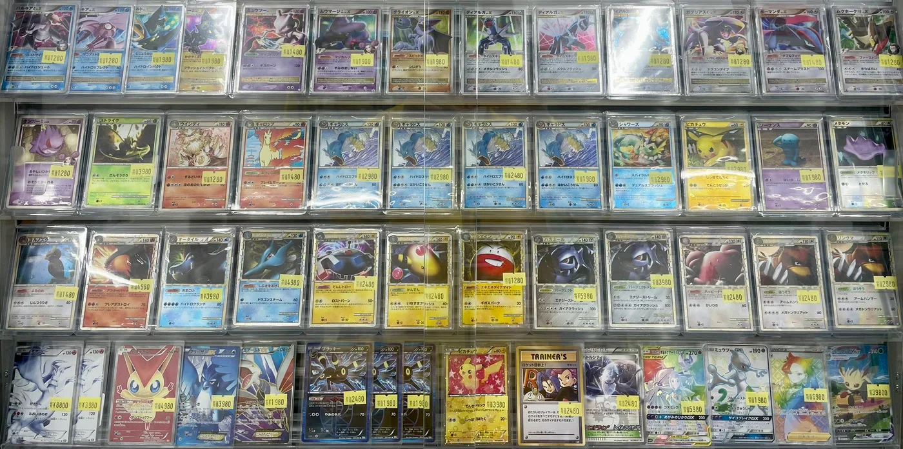

先に結論
- 仕事内容：カードの販売・接客、買取査定、在庫管理・値付け、対戦スペースやイベントの運営など。アルバイトはレジ・陳列・仕分けから始めて、慣れたら買取査定の補助へ進みます。
- 知識：ポケカやトレカの知識は入社後の研修で学べます。大阪店ではスタッフの8割がトレカ未経験から始めています。
- 条件（ニンニンの場合）：アルバイトは時給1,400〜1,500円・週3日以上の通し勤務が基本。正社員は月給25万〜50万円。
- 応募：履歴書は面接時でOK。応募から3営業日以内に担当者よりご連絡します。
株式会社NINJA（ポケモンカード専門店ニンニン）採用チームが、募集要項と店長インタビューをもとに作成しました。最終更新 2026年10月28日
カードショップのバイトの仕事内容
カードショップ（トレカショップ）の仕事は、レジに立つだけではありません。ポケモンカードの場合、シングルカード（1枚売り）やパックの販売、お客様が持ち込んだカードの買取査定、値付けと在庫の管理、対戦スペースや大会の運営まで、お店を回す仕事が幅広くあります。ニンニンの募集要項にある仕事は次のとおりです。
アルバイトの主な仕事
- レジ対応・カード販売の接客
- 商品の陳列・整理・在庫補充
- カードの仕分け・スリーブ入れ作業
- 店内の清掃・ディスプレイ整備
- 慣れてきたら買取査定の補助
先輩スタッフがマンツーマンで教えるので、アルバイトが初めての方でも始められます。
正社員の主な仕事
- ポケモンカードのシングル販売・パック販売の接客対応
- カードの買取査定・在庫管理・値付け作業
- オリパ（オリジナルパック）の企画・作成
- 対戦スペースの運営・イベントの企画サポート
- ECサイトへの商品登録・発送業務
- 店舗ディスプレイの作成・SNS運用

ポケカやトレカの知識は必要？
応募の時点で知識は必要ありません。入社後の研修で、カードの種類・レアリティ・相場観など、仕事に必要な知識を学べます。大阪店の店長によると、ニンニン大阪ではスタッフの8割がトレカ未経験から始めて活躍しています。
「カード知識よりも大切なのは、お客様を楽しませたいという気持ちです。」
秋葉原店 店長（インタビューを読む）
面接ではポケモンカードとの関わりやお気に入りのカード・デッキを聞くことがありますが、詳しくなくても大丈夫です。「興味がある」という気持ちがあれば十分です。
「きつい」と言われるのはどんなところ？
「カードショップのバイトはきつい」という声を見かけることもあります。ニンニンで働く場合に、応募前に知っておいてほしい点を正直にまとめました。
- 基本は通し勤務です。アルバイトは平日12:45〜20:15、土日祝10:45〜20:15が基本で、週3日以上働ける方を募集しています（店舗により時短勤務は応相談）。週1〜2日・短時間だけ働きたい方には合わないかもしれません。
- 土日に勤務できる方を優遇しています。
- 買取査定にはカードの相場の知識が要ります。研修でレアリティや相場観を学び、アルバイトは慣れてから査定の補助を任されます。
- 社員割引はありません。交通費は一部支給（上限あり）です。
一方で、毎日の変化や、お店づくりに関われることにやりがいを感じるスタッフも多い仕事です。
「大会運営や買取、SNS発信など幅広い仕事に関われるため、毎日変化があって飽きません。」
大阪店 店長（インタビューを読む）
「シフトの相談がしやすく、スタッフ同士の協力体制もしっかりしています。」
秋葉原店 店長（インタビューを読む）
時給・給料はどのくらい？
アルバイト
- 時給
- 1,400〜1,500円（試用期間は時給1,400円。最短3ヶ月・最長1年で本採用の時給1,500円に自動更新）
- 勤務時間
- 平日 12:45〜20:15／土日祝 10:45〜20:15（基本は通し勤務・週3日以上）
- 交通費
- 一部支給（上限あり）
- 保険
- 労災保険（勤務日数・時間により社会保険加入あり）
- その他
- 研修制度・制服貸与・正社員登用制度あり
正社員
- 月給
- 25万円〜50万円（経験・能力による）
- 勤務時間
- 10:00〜20:00（実働8時間・シフト制）
- 賞与・昇給
- 賞与 年2回（7月・12月）／昇給 年1回（4月）
- 休日
- 週休2日制（シフト制）・年末年始・有給休暇
- 保険
- 社会保険完備（雇用保険・労災保険・健康保険・厚生年金）
くわしい条件はアルバイトの募集要項・正社員の募集要項をご覧ください。
高校生・大学生・フリーターでも働ける？
高校生の方はご応募いただけません。大学生・専門学校生の方は応相談です（基本は週3日以上の通し勤務のため、長く安定して働ける方を優先しています）。学校のテスト期間や長期休暇の相談もできます。フリーターの方は歓迎です。
面接では何を聞かれる？服装は？
- 応募はWebの応募フォームか、採用ダイヤル（03-4363-7710・年中無休 13:00〜20:00）から。履歴書は応募時には不要で、面接時にご持参ください。
- 応募から3営業日以内に担当者よりご連絡します。
- 面接では志望動機やこれまでのご経験のほか、ポケモンカードとの関わりやお気に入りのカード・デッキをお聞きすることがあります。堅苦しい面接ではなく、お互いを知るための対話です。
- 服装はカジュアルでOKです。
- 勤務地は面接でご希望をお伺いします。自宅から通いやすい店舗への配属が基本で、複数の店舗を希望として伝えられます。
正社員として働くには？
正社員（店舗スタッフ）も募集しています。販売・買取に加えて、オリパの企画、ECサイトの運営、SNS運用など、お店づくり全体に関われます。アルバイトから正社員への登用制度もあります。
「「こうした方がお客様に喜ばれる」「こんなイベントをやりたい」という提案を積極的に聞いてもらえるため、やらされる仕事ではなく、自分でお店を作っている感覚があります。」
秋葉原店 店長（インタビューを読む）
ニンニンで働ける店舗
東京（秋葉原・中野・池袋）・横浜・大宮・大阪（日本橋）・沖縄の全国11拠点で募集しています。店舗ごとの住所・最寄り駅と応募条件は各店舗の求人ページにまとめています。